The Call of the Wild
by Jack London, United States (1876–1916)
Buck, a pampered St. Bernard-Collie mix, is stolen from a sunny California estate and sold as a sled dog in the Yukon during the Klondike Gold Rush. In a world ruled by the law of club and fang, he must adapt, fight for mastership and decide where he belongs when the call of the wild grows louder than the human world.
7 chapters. Reading edition with chapter summaries.
Table of Contents
Dramatis Personae
-
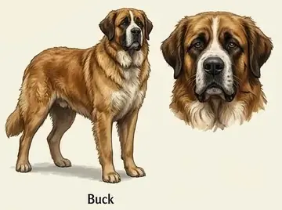
Buck Pampered California dog turned sled dog -
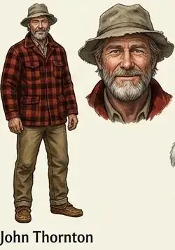
John Thornton Frontiersman who rescues Buck -
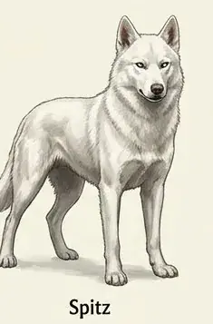
Spitz Ruthless white lead dog and Buck’s rival -
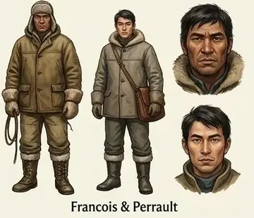
François & Perrault French-Canadian mail couriers -
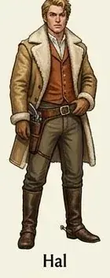
Hal Inexperienced gold-seeker from the East Coast -
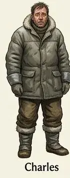
Charles Inexperienced gold-seeker from the East Coast -
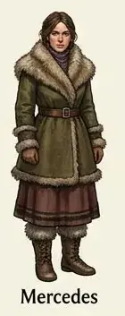
Mercedes Inexperienced gold-seeker from the East Coast -
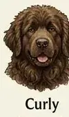
Curly Friendly Newfoundland killed on Dyea beach -
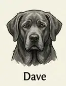
Dave Faithful old sled dog -
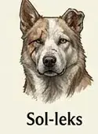
Sol-leks Experienced older sled dog -
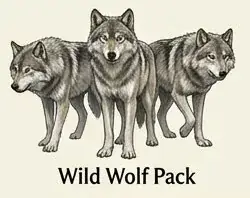
The Wild Wolf Pack The pack Buck joins and leads
About the Author
Jack London was born John Griffith Chaney in San Francisco in 1876. Raised in a working-class household, he began working at ten and later served as an oyster pirate, a fish patrol member, a seal-hunting sailor and a freight-train hobo, educating himself in public libraries. In 1897 he joined the Klondike Gold Rush; the search for gold brought him little, but the frozen Yukon and its sled dogs inspired his finest writing, including The Call of the Wild (1903) and White Fang (1906). One of the first American authors to win worldwide fame through magazine fiction, he published more than fifty books exploring survival, instinct and the clash between civilization and nature.
Chapters here are formatted for reading convenience from the authoritative edition.